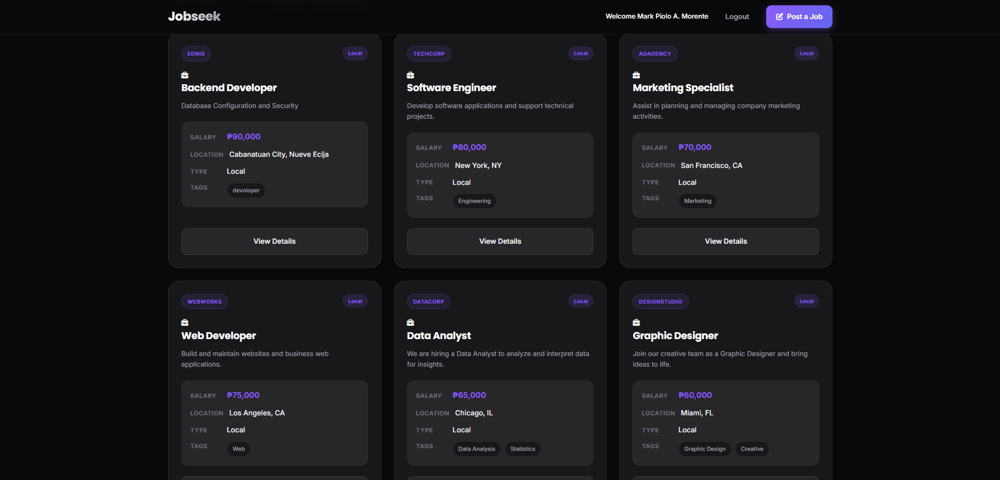

Programming Languages
PHP, JavaScript (ES6+), C++, Java
IT Portfolio · Supporting documentation

4th-Year BS Information Technology Student · Aspiring Web Developer
An Information Technology student at Nueva Ecija University of Science and Technology (Sumacab Campus) passionate about building responsive, accessible, and high-performance web applications. This document presents the complete portfolio documentation including profile, technical competencies, featured IT projects, webinar certifications, and contact information.
I am a 4th-year BSIT student at Nueva Ecija University of Science and Technology with a strong foundation in full-stack web development, user interface design, and database management. I specialize in developing modern web applications using PHP, Vue.js, MySQL, JavaScript, and Tailwind CSS.
To secure an On-the-Job Training (OJT) internship and future software/web developer role where I can contribute my programming skills, deliver clean and maintainable code, and continue learning in a dynamic engineering team.
PHP, JavaScript (ES6+), C++, Java
HTML5, CSS3, Vue.js 3, Vite, Tailwind CSS, Bootstrap 5, PWA (Progressive Web Apps)
MySQL, PDO, Relational Database Modeling, CRUD Operations, SQL Queries
Git, GitHub, VS Code, Chrome DevTools, Vercel, Live Server
MVC (Model-View-Controller), RESTful Routing, Prepared Statements, Session Authentication
UI/UX Design, Responsive Layouts, Teamwork & Collaboration, Technical Documentation
Three major IT projects showcasing full-stack software development, responsive UI/UX, progressive web app engineering, and database design.
Capstone Project · PWA
Vue.js 3 · Vite · Tailwind CSS · PWA · Vercel
A Progressive Web App designed for Peñaranda Band 1870 that synchronizes rehearsal schedules, automates call-time notifications, tracks member attendance reliability scores, and provides an interactive officer directory with a 3D carousel UI. Deployed live on Vercel with offline capabilities.
Lead full-stack developer — designed component architecture using Vue 3 and Vite, styled interface with Tailwind CSS, implemented PWA service workers for offline caching, and configured cloud deployment on Vercel.
A fully functional and deployed Progressive Web App accessible on mobile and desktop devices.

Live demo: band1870.vercel.app
Full-Stack Web Application
PHP · MySQL & PDO · Custom MVC Framework · RESTful Routing
A full-stack recruitment portal and job directory web application engineered with a custom PHP MVC framework. Features PSR-4 autoloading, custom RESTful router with HTTP verb support, session-based authentication & authorization middleware, and secure PDO MySQL database operations.
Sole full-stack developer — designed database schema in MySQL, implemented PDO wrapper class, built the HTTP router supporting GET/POST/PUT/DELETE, developed auth middleware, and designed the responsive user interface.
An open-source, full-stack recruitment web application with authenticated job posting and search features.


Source code repository: github.com/kyoujin-pio/WS03
Web Development
PHP · Bootstrap 5 · HTML5 · CSS3 · JavaScript
A multi-page official website for Peñaranda Band 1870 featuring historical archives, online booking and services inquiry system, media performance gallery, and responsive layout across desktop and mobile browsers.
Sole designer and developer — designed UI/UX mockups, built modular PHP page templates, integrated Bootstrap 5 components, and created custom CSS animations.
A responsive, multi-page community web portal for Peñaranda Band 1870.
GitHub: github.com/kyoujin-pio
Five verified webinar and professional development certificates earned in 2026 covering System Integration, UI/UX Design, Artificial Intelligence, and Emerging IT Trends:
Demonstrated leadership, teamwork, and technical problem solving through academic projects and community engagements:
Email
morentemarkypiolo@gmail.com
GitHub
github.com/kyoujin-pio
Portfolio
kyoujin-pio.github.io/project-1